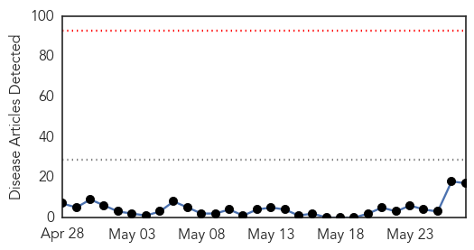
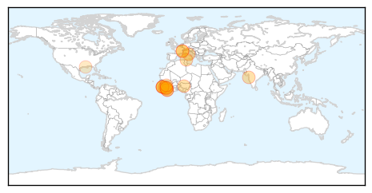
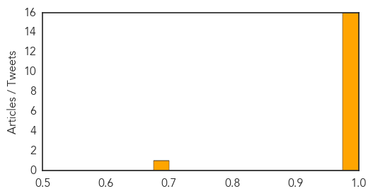

Cholera
30-Day Web Trend
4 alerts, 5 warnings

30-Day Twitter Trend
1 alerts, 0 warnings

Article Locations

Article Confidences

Top Articles:
- 0.998
- Hundreds infected by cholera in warn-torn S Sudan: WHO
- 0.996
- Hundreds Infected by Cholera in Warn-Torn S.Sudan — Naharnet
- 0.977
- UN responds to cholera outbreak in South Sudan
- 0.969
- Sudan: Foul water blamed for diarrhoeia in Sudan's White Nile
- 0.967
- Foul water blamed for diarrhoeia in Sudan’s White Nile - Sudan
- 0.932
- South Sudan Red Cross responds to cholera outbreak - South Sudan
- 0.857
- No new cases of cholera in Twic East
- 0.666
- Tens Of Thousands More South Sudanese Flee Fighting Following Truce
- 0.641
- Tens of thousands more South Sudanese have fled fighting following truce – UN agency
Top Tweets:
- 0.569
- >130K doses of oral cholera vaccine administered in Minkaman, Tomping and Juba3 camps in S. Sudan- Details in WER: http://t.co/S5yyTbD6Xx
Ebola
30-Day Web Trend
0 alerts, 0 warnings

30-Day Twitter Trend
0 alerts, 0 warnings

Article Locations
Article Confidences
Top Articles:
- 1.000
- Ebola Epidemic Jumps the Border Into Sierra Leone
- 1.000
- Sierra Leone Confirms At Least One Ebola Case
- 1.000
- Sierra Leone Ebola patient's family remove her from local health centre
- 1.000
- Ebola virus is still killing Africans
- 1.000
- Ebola patient's family remove her from clinic
- 1.000
- Ebola countries miss treatment, burial targets
- 1.000
- Ebola patient in Sierra Leone pulled from hospital by family
- 1.000
- iafrica.com Sierra Leone confirms Ebola death
- 1.000
- Sierra Leone Ebola patient's family remove her from local health center
- 0.999
- Guinea announces 2 new cases of Ebola in previously unaffected area
- 0.999
- Sierra Leone Ebola patient's family remove her from local health centre
- 0.999
- Sierra Leone Ebola patient's family remove her from local health centre
- 0.998
- “I had Ebola and survived.”
- 0.998
- Wendy Orent: Forget MERS; focus on polio instead
- 0.980
- Five dead as Sierra Leone records first Ebola outbreak
- 0.977
- Call for vigilance after first Ebola death in Sierra Leone
- 0.697
- Should a Vaccine for Wild Chimps Be Tested on Captive Ones?
Top Tweets:
-
No tweets found for May 27, 2014